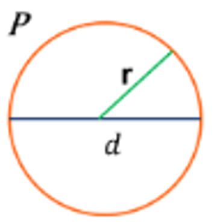

<ion-list lines="none">
  <ion-item>
    <h2>Figura Geometrica - Circulo</h2>
  </ion-item>
  <ion-card>
    <ion-card-header>
      <ion-card-title>Círculo</ion-card-title>
      <ion-card-subtitle>Perímetro</ion-card-subtitle>
    </ion-card-header>
    <ion-card-content>
      <p>El perímetro de un círculo es la longitud de la línea que forma su borde.</p>
      <p>Donde:</p>
      <ul>
        <li><b>P:</b> perímetro</li>
        <li><b>d:</b> diámetro</li>
        <li><b>r:</b> radio del círculo</li>
        <li><b>π:</b> 3.1416</li>
      </ul>
      
    </ion-card-content>
  </ion-card>
  
  <ion-item>
    <ion-input [(ngModel)]="calcularPerimetroStr" type="number" label="Calcular Perimetro" label-placement="floating" fill="outline" placeholder="Ingrese diametro"></ion-input>
  </ion-item>
  <ion-item>
    <ion-button (click)="calcularPerimetro()">Calcular Perimetro</ion-button>
  </ion-item>
  <ion-item>
    {{resultado}}
  </ion-item>
</ion-list>